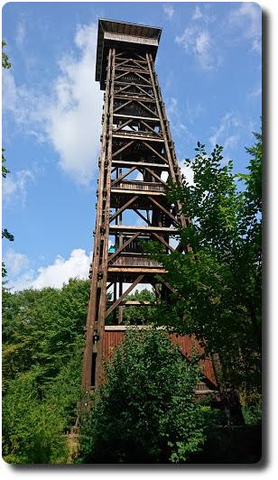

Tour zum Goetheturm
Heute haben wir eine Fahrrad-Rundtour von Langen zum Goehteturm und dem Frankfurter Flughafen gemacht.
Ein paar Einkehrtipps habe ich in der Beschreibung der Strecke auf gpsies.com hinterlegt :-)
Update: Leider ist der Goetheturm nicht mal einen Monat später abgebrannt. schnief.